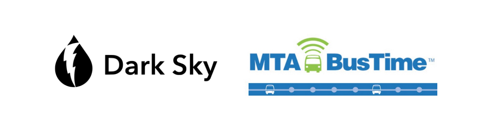
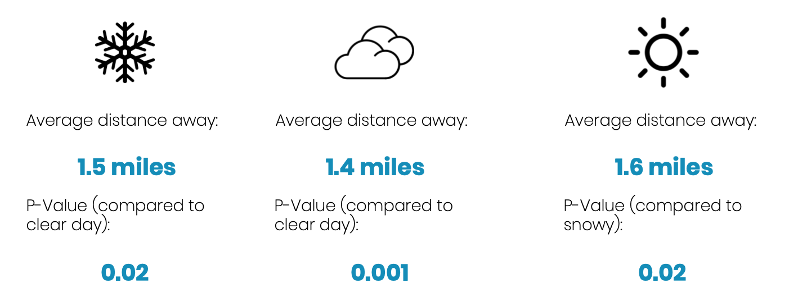

Commute planner for Carrol Gardens , NYC
{{ post | safe }}
How does the commute planner work?
The commute planner was built from the analysis of real time data from Carrol Gardens NYC.
1. Understanding the data sources
This project required real time data about the weather in an area and the current
state of public transportation options in the area. To gather such data two wed based data sources were used:
A weather API, Dark sky, and a bus sensing API,
the MTA bus time API. API stands for Application Programming Interface. In computer programming,
API's are a set of communication protocols and tools that expose objects and actions a developer might need to
develop a new application. API’s are available across many platforms and systems.

2. Exploring possible correlations between the weather and bus movements
Here are a few scatter plots that allow us to explore possible correlations between our different variables.
The plot bellow highlights the obvious correlation between the distance and number of stops away the bus is.
{{ script|safe }}
{{ div|safe }}
The plot bellow suggests there is no correlations between temperature and distance.
{{ script2|safe }}
{{ div2|safe }}
3. Quantifying the significance of the weather
Scatter plots are not the only way to identify possible correlations. T-tests revealed that the data had a
significant impact on the average distance a bus is at any given time from a carrol gardens bus stop.

4. Considering the limitations of the data set
Histograms were produced to identify any gaps or outliers in the data as well as study the
distribution of different variables. The most important histogram created was for the categorical variable:
Icon. Icon is a description of the weather conditions. the histogram bellow shows that the data was collected during a highly
snowy week in New York City. The majority of data points have the icon ‘Snow.’ This highlights an important
limitation of the data set: the data set is biased towards snowy conditions. For future development, data
should be collected in difference weather conditions to create a balanced data set.
{{ script3|safe }}
{{ div3|safe }}
5. Building the commute planner button
The button was built to prototype a messaging system for users. When the button is pressed,
a random integer is generated. The corresponding data point is found in the data set. Weather
and predicted transportation conditions are returned.
Thank-you for using the morning commute planner!
@2018 Developed by Josephine Latreille